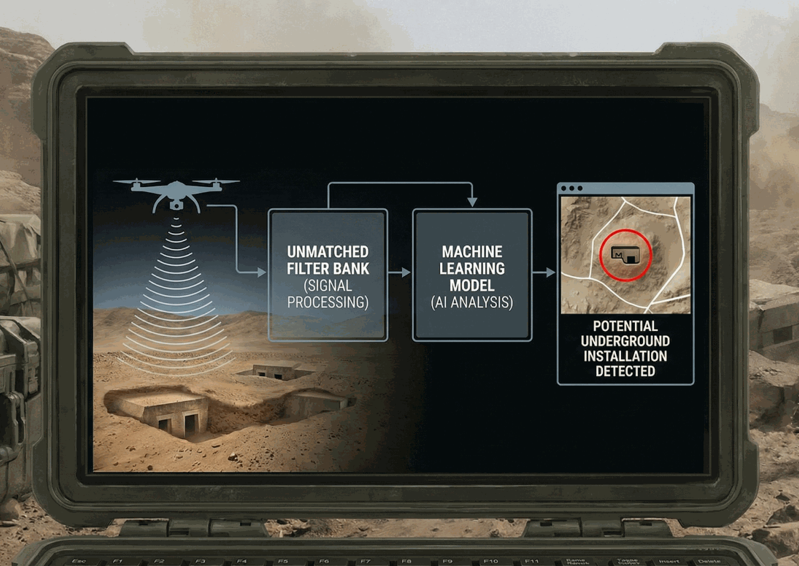

Ph.D. Thesis
My doctoral research addressed detection of underground installations in hostile environments, combining machine learning with robust signal processing in low signal-to-noise regimes. It connects to broader research interests and builds on industry experience in applied AI.

Detection of underground installations in hostile environments.
During my PhD studies, I had the privilege of working on a project funded by the U.S. Army Research Office (ARO) and led by my adviser, Prof. Nathan Intrator, together with Nobel laureate Prof. Leon N. Cooper. The project combined machine-learning techniques with a bank of unmatched filters to estimate object distance from time-of-arrival in signal-to-noise-ratio regimes below the classical detection threshold. This approach enabled the use of low-power acoustic pulses to detect underground installations while remaining covert.
Publications
-
2008 Journal
A data fusion and multiple ping method for improving the resolution of low-power acoustic and seismic sensing
-
2010 Conference
SNR-dependent filtering for Time Of Arrival estimation in high noise
-
2011 Conference
Biosonar-inspired source localization in low SNR
-
2012 Journal
Semi-coherent time of arrival estimation using regression
-
2013 Journal
Time-of-flight estimation in the presence of outliers. Part I: Single echo processing
-
2013 Journal
Time-of-flight estimation in the presence of outliers. Part II: Multiple echo processing
-
2014 Journal
Energy-Efficient Time-of-Flight Estimation in the Presence of Outliers: A Machine Learning Approach
Award
- 2011: The Don and Sara Maren Foundation award for outstanding achievements in Ph.D. studies.